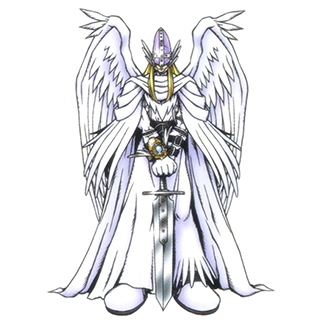
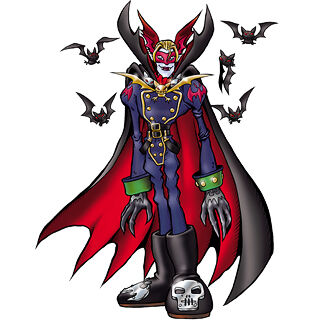

O local é atacado por Myotismon que está atras dos hieróglifos. O pergaminho azul reage e Pegasusmon Evolui para Holy Angemon:Priest Mode e derrota Myotismon. Vocês descobrem que Argomon foi visto na praia. Para onde você deve ir?
